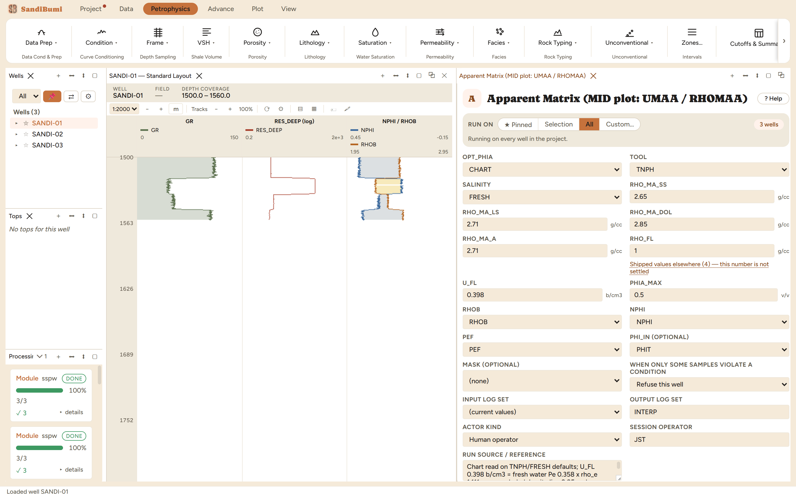

Apparent matrix density and apparent matrix volumetric photoelectric factor, the two axes of the MID plot. The fluid is removed from the density and from the photoelectric absorption at an apparent porosity read the way you would by hand off the density-neutron chart; crossplot UMAA against RHOMAA and switch on the MID-plot chart overlay to read lithology.
U = PEF · ρe, ρe = (RHOB + 0.1883)/1.0704 RHOMAA = (RHOB − φa·RHO_FL)/(1 − φa) UMAA = (U − φa·U_FL)/(1 − φa)
The module computes the two coordinates of the Schlumberger MID plot (apparent matrix density RHOMAA and apparent matrix volumetric photoelectric factor UMAA) by removing the fluid from the density and from the photoelectric absorption at an apparent porosity read the way you would read it by hand off the density-neutron chart. Crossplot UMAA (X) against RHOMAA (Y), switch on the Lith-6 chart overlay, and the mineral triangle does the lithology reading.
The defaults carry the chart read (CHART, TNPH, FRESH) and the cited sandstone/limestone matrix lines. Three values had to be supplied, and two of them were demanded by name when the first run refused:

On these wells: 3 clean. One honesty note about what the crossplot then shows: in the clean wet sand the pair reads a median RHOMAA 2.79 / UMAA 6.2, well off the quartz point. That is not the module misbehaving: these example wells are generated from zone endpoint values, and their (RHOB, NPHI, PEF) triples do not ride the vendor chart the way a logged rock does, so the apparent-matrix arithmetic lands where the synthetic numbers send it. On logged data the clusters land on the mineral triangle; on this dataset the chapter's job is the mechanics, and the overlay chapter of the crossplot documentation covers the reading.
Everything below is generated from the same manifest the application builds this module’s pane from — descriptions, defaults, sources, ranges and pre-run checks here are exactly what the running application enforces.
Apparent matrix density RHOMAA and apparent matrix volumetric photoelectric factor UMAA — the two axes of the Schlumberger Lith-6 MID plot (crossplot X = UMAA, Y = RHOMAA, then switch on the 'Lith-6 Umaa-Rhomaa MID plot' chart overlay). U = PEF * rho_e with rho_e = (RHOB + 0.1883)/1.0704; the fluid is then removed from both: RHOMAA = (RHOB - phi*RHO_FL)/(1 - phi), UMAA = (U - phi*U_FL)/(1 - phi). PHI here is the APPARENT porosity, the one judgement call in the method. OPT_PHIA = CHART (default) reads it off the density-neutron crossplot the way you would by hand on Por-11: it solves for the porosity at which the density and the neutron imply the SAME matrix, interpolating across the chartbook's sandstone, limestone and dolomite curves (pick the curve family with TOOL/SALINITY, exactly as in Neutron Matrix Conversion). Build a rock's two tool readings, feed them back, and this returns that rock: porosity to 1e-3 and RHOMAA onto its own matrix line, for sandstone, limestone and dolomite alike. Rocks denser than every matrix line (anhydrite, pyrite) clamp to the end of the search and stay heavy rather than dropping out, and gas pushes points low-left just as it does on the printed chart. XPLOT is the analytic average commercial suites take — kept for comparison, not for accuracy: it drags points toward the assumed RHO_MA_A, leaving dolomite about 0.06 g/cc light and 0.34 b/cm3 left of its chart point. NEUTRON uses the neutron alone. LOG takes a porosity curve you already trust. NPHI must be APPARENT LIMESTONE for CHART and NEUTRON — run Neutron Matrix Conversion first if the log is recorded in sandstone or dolomite units. Density-only apparent porosity is deliberately NOT offered: it is algebraically degenerate (it returns RHO_MA_A for every sample). Barite mud makes PEF, and therefore UMAA, unreadable — mask those intervals.
| Role | Description | Resolves to | Required | Notes |
|---|---|---|---|---|
| RHOB | Bulk density log, as logged | RHOB | yes | — |
| NPHI | Neutron porosity log, apparent limestone | NPHI | yes | — |
| PEF | Photoelectric factor | PEF | yes | — |
| PHI_IN | Apparent porosity curve, used only when OPT_PHIA = LOG | PHIT | no | — |
Whole-well defaults; per-zone values from the Zones pane take precedence inside their zones (except where a parameter is marked one-value-per-well).
Sandstone matrix line, CHART lookup
Limestone matrix line, CHART lookup
Dolomite matrix line, CHART lookup
Apparent matrix density for the density leg (limestone basis)
Fluid density
fluid_density); the pane lists them with sources at the point of choice.Fluid volumetric photoelectric factor
Reject samples whose apparent porosity exceeds this
Apparent porosity basis (see the method note — this choice moves the points)
CHARTXPLOTNEUTRONLOGCHARTNeutron measurement the log comes from, for the CHART lookup (same chart families as Neutron Matrix Conversion)
TNPHNPHIAPLCFPLCSNPTNPHFormation salinity for the CHART lookup (TNPH curves only; SALT_250K = 250,000 ppm)
FRESHSALT_250KFRESH| Name | Description |
|---|---|
| U | Volumetric photoelectric factor |
| RHOMAA | Apparent matrix density |
| UMAA | Apparent matrix volumetric photoelectric factor |
| PHIA | Apparent porosity actually used |